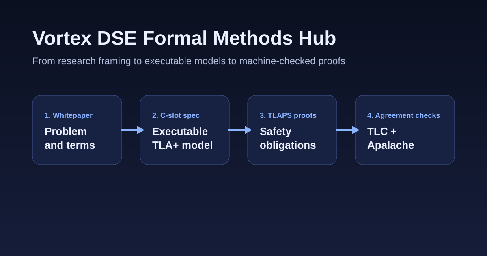

Formal methods · TLA+ · TLAPS · distributed consensus
Vortex DSE Formal Methods Hub
A lightweight landing page for readers who want the shortest path from problem statement to executable specification to machine-checked proof.
Architecture overview
The public artifacts are intentionally layered so casual readers can enter at the whitepaper and specialists can continue into proofs.

Why this matters
For researchers
Clear assumptions, invariants, and proof boundaries make the work easier to review and cite.
For engineers
Executable models and scenario suites help connect formal claims to implementation-facing behavior.
For new contributors
The hub now provides a newcomer path, contributor guide, and reusable release summary.